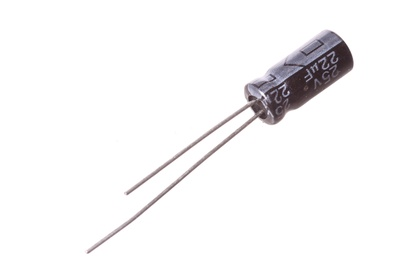
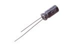
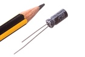

5 mm 22 uF Capacitor (Electrolytic) 25v - CEU022

Summary
Name:
5 mm 22 uF Capacitor (Electrolytic) 25v
ID:
CAPE-05-X-UF22-VA
Hex ID:
CEU022
WebPage:
https://github.com/oomlout/oomlout-OOMP/wiki/CAPE-05-X-UF22-VA
Short URL:
http://oom.lt/CEU022
Revision History:
https://github.com/oomlout/oomlout-OOMP/blob/master/parts/CAPE-05-X-UF22-VA/
Type
Size
Color
Description
Index
CAPE
Capacitor (Electrolytic)
05
5 mm
X
UF22
22 uF
VA
25v
Images
 
About
This part is awaiting a description.
Specifications
Info
Value
Type
Capacitor (Electrolytic)
Size
5 mm
Description
22 uF
Index
25v
Pitch
2 mm
Height
11 mm
Diameter
5 mm
Extra Details
Spotted a mistake, want to add more? Let us know
oomp@oomlout.com
All images and resources are licensed [CC BY-SA] unless otherwise stated (ie. the datasheets)